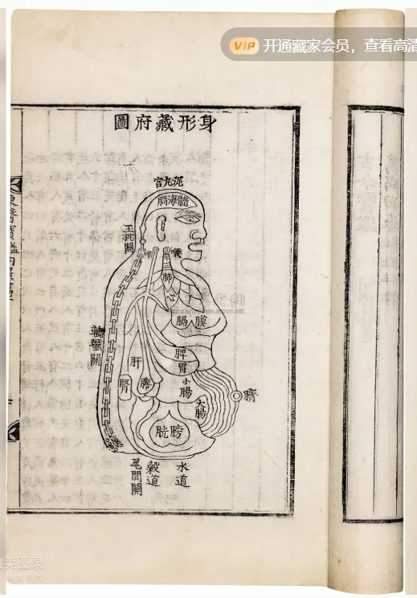

 点击图片可查看大图 · 原始图像 519×744 px 未提交 朝鲜 许浚撰 东医宝鍳 许浚 成交记录未提交 估价RMB 100,000 记录信息 拍卖日期2008-12-10 09:00 拍卖公司富彼国际 拍卖专场2008年秋季拍卖会 古籍善本 创作年代原表未著录 开本25.5×18cm 尺寸类型开本 高 × 宽25.5 × 18.0 cm 纸张原表未著录 成交价原文无成交价（未提交） 来源位置Excel 第 49 行